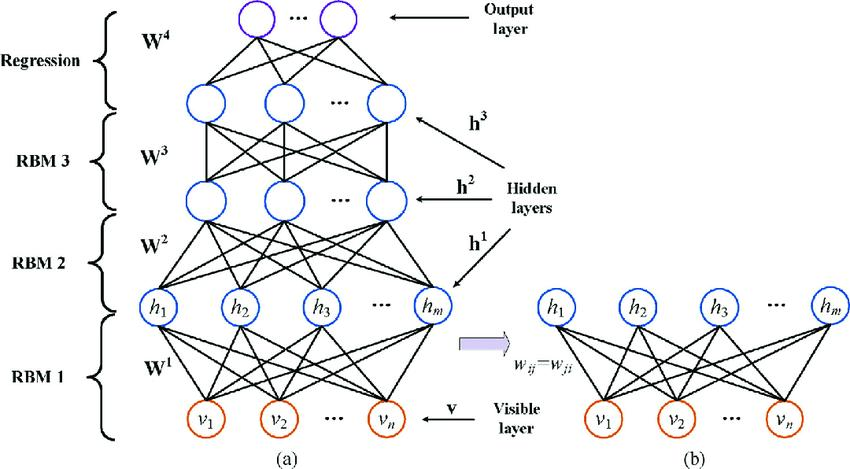

Self-organization
In chapter 1, I posited that complex systems have three intriguing key properties. We have seen chaos and phase transitions in chapter 2 and 3 and will now focus on the third property, self-organization. Self-organization is captivating because it reveals the remarkable ability of complex systems to generate order and structure without external control or intervention.
Self-organization plays an essential role in psychological and social processes. It operates in our neural system at the neuronal level, in perceptual processes but also in higher cognition. In human interactions, self-organization is a key mechanism, for example, in opinion polarization.
Unlike chaos and phase transitions, self-organization lacks a universally accepted formal definition. The definition most people agree on is that self-organization, or spontaneous order, is a process in which global order emerges from local interactions between parts of an initially disordered complex system. These local interactions are often fast, while the global behavior takes place on a slower time scale. Self-organization takes place in an open system, which means that energy, such as heat or food, can be absorbed. Finally, some feedback between the global and local properties seems to be essential. Self-organization occurs in many physical, chemical, biological, and human systems. Examples of self-organization include the laser, turbulence in fluids, convection cells in fluid dynamics, chemical oscillations, flocking, neural waves, and illegal drug markets. For a systematic review of research on self-organizing systems, see @kalantariEmergencePhenomenaSelforganizing2020. There are many great online videos. I recommend “The Surprising Secret of Synchronization” as an introduction. For a short history of self-organization research, I refer to the Wikipedia page.
The main goal of this chapter is to provide an understanding of self-organization processes in different sciences, and in psychology in particular. I will do this by providing examples from many different scientific fields. It is important to be aware of these key examples, as they can inspire new lines of research in psychology.
This is also a practical chapter. We will learn to simulate self-organizing processes in neural and social systems using agent-based models. To this end, we will use R and another tool, NetLogo. NetLogo is an open-source programming language developed by Uri Wilenski [-@wilenskyIntroductionAgentbasedModeling2015]. There are (advanced) alternatives, but as a general tool NetLogo is very useful and fun to work with.
I start with an overview of self-organization processes in the natural sciences, then I will introduce NetLogo and some examples, and I will end with an overview of the application of self-organization in different areas of psychology.
Key examples from the natural sciences
Physics
One physical example of self-organization is the laser. An important founder of complex systems theory is Herman Haken [@hakenSynergetics1977]. He developed synergetics, a specific approach to the study of self-organization and complexity in systems that is also popular in psychology. Synergetics originated in Haken’s work on lasers. We will not discuss lasers in detail here, but the phenomenon is fascinating. Light from an ordinary lamp is irregular (unsynchronized). By increasing the energy in a laser, a transition to powerful coherent light occurs. In the field of synergetics, the order parameter is the term used to describe the coherent laser light wave that emerges. It is a measure that signifies how ordered or structured a system is. The individual atoms within this system move in a manner that aligns with this emergent property, which is known as enslavement. Interestingly, the motion of these atoms contributes to the formation of the order parameter, i.e., the laser light wave. Conversely, the laser light wave dominates the movement of the individual atoms. This interaction exhibits a cyclical cause-and-effect relationship or strong emergence (cf. ?@fig-ch1-img4). Synergetics has been applied, as we will see later, to perception [@hakenSynergeticsPsychology1992] and coordinated human movement [@fuchsCoordinationDynamicsSynergetics2018].
Another famous example, which will be very important for psychological modeling later, is the Ising model of magnetism. This very simple model (replaced by more advanced models of magnetism in modern physics) has found applications in many sciences. In the standard 2d version of the model, atoms are locations on a two-dimensional grid. Atoms have up or down spins. Only when the spins are aligned (all up or all down), we have an effective magnet. If they are not aligned, the effect of the individual spins is canceled out. Two variables control the behavior of the magnet. These are the temperature of the magnet and the external magnetic field. The lower the temperature the more the spins align. At high temperatures, all the atoms behave randomly, and the magnet loses its magnetic effect. The temperature at which the magnet loses its magnetic force is called the Curie point (see YouTube for some fun demonstrations). With an external field we can force the spins to be all up or all down. This external field could be caused another magnet.

The main model equations of the Ising model are:
\[ H\left( \mathbf{x} \right) = - \sum_{i}^{n}{\tau x_{i}} - \sum_{< i,j >}^{}{x_{i}x_{j}} \tag{1}\]
\[ P\left( \mathbf{X} = \mathbf{x} \right) = \frac{\exp\left( - \beta H\left( \mathbf{x} \right) \right)}{Z}. \tag{2}\]
The first equation defines the energy of a given state vector \(\mathbf{x}\) (for \(n\) spins with states -1 and 1). The notation \(< i,j >\) in the summation means that we sum over all neighboring, or linked, pairs.
The external field and temperature are \(\tau\) and \(\frac{1}{\beta}\), respectively. The first equation simply states that nodes congruent with the external field lower the energy. Also, neighboring nodes with equal spins lower the energy. Suppose we have only four connected positive spins (top row of Figure 1) and no external field, then we have \(\mathbf{x} = (1,1,1,1)\) and \(H = - 6\). This is also the case for \(\mathbf{x} = ( - 1, - 1, - 1, - 1)\), but any other state has a higher energy.
The second equation defines the probability of a certain state (e.g., all spins up). This probability requires a normalization, \(Z\), to ensure that the probabilities over all possible states sum up to 1. For large systems (\(N > 20\)), the computation of \(Z\) is a substantive issue as the number of possible states grows exponentially. If the temperature is very high, that is, \(\beta\) is close to zero, \(\exp\left( - \beta H\left( \mathbf{x} \right) \right)\) will be 1 for all possible states, and the spins will behave randomly. The differences in energy between states do not matter anymore.
The randomness of the behavior is captured by the concept of entropy. Entropy is a measure of the degree of disorder or randomness in a system. To explain this a bit better we need to distinguish the micro- and macrostate of an Ising system. The microstate is defined by the configuration \(\mathbf{x}\) of spins, while the macrostate is determined by the sum of spins (similar to how magnetization is defined). The Boltzmann entropy is a function of the number of ways (\(W\)) a particular macrostate can be realized. For \(\sum_{}^{}x = 4\) there is only one way (\(\mathbf{x} = 1,1,1,1)\). But for \(\sum_{}^{}x = 0\), there are 6 ways (\(W = 6\)). The Boltzmann entropies (\(\ln W)\) for these two cases are 0 and 1.79, respectively. The concept of entropy will be important in later discussions.
In the simulation of this model, we take a random spin, calculate the energy of the current \(\mathbf{x}\) and the \(\mathbf{x}\) with that particular spin flipped. The difference in energy determines the probability of a flip:
\[ P\left( x_{i} \rightarrow - x_{i} \right) = \frac{1}{\left( 1 + e^{- \beta\left( H\left( x_{i} \right) - H\left( - x_{i} \right) \right)} \right)}. \tag{3}\]
If we do these flips repeatedly, we find equilibria of the model. This is called the Glauber dynamics (more efficient algorithms do exist). The beauty of these algorithms is that the normalization constant Z falls out of the equation. In this way we can simulate Ising systems with \(N\) much larger than 20.
In the case of a fully connected Ising network (also called the Curie-Weiss model), the emergent behavior, what is called the mean field behavior, can be described by the cusp [Section 3.2.3, @abeCuspSingularityMean2017; @postonCatastropheTheoryIts2014]. The external field is the normal variable and temperature acts as a splitting variable. The relationship to self-organization is that when we cool a hot magnet, at some threshold the spins begin to align and soon are all up or down. This is the pitchfork bifurcation, creating order out of disorder.1
In the 2D Ising model (see Figure 1), the connections are sparse (only local) and more complicated (self-organizing) behavior occurs. We will simulate this in NetLogo later in this chapter and as a model of attitudes in chapter 6.
Chemistry
Another founder of self-organizing systems research is Ilya Prigogine. Prigogine won the 1977 Nobel Prize in Chemistry for his work on self-organization in dissipative systems. These are systems far from thermodynamic equilibrium (due to high energy input) in which complex, sometimes chaotic, structures form due to long-range correlations between interacting particles. One notable example of such behavior is the Belousov-Zhabotinsky reaction, an intriguing nonlinear chemical oscillator, which I mentioned earlier.
Collaborating with Stengers, he authored the influential book “Order out of Chaos” in 1978. This work significantly influenced the scientific community, particularly through their formulation of the second law of thermodynamics. This law states that the total entropy of an isolated system always increases over time and never decreases, meaning that spontaneous processes in nature tend to move towards a state of increasing disorder or randomness. Another way of stating the second law is that heat flows spontaneously from hot objects to cold objects, and not the other way around, unless external work is applied to the system. A more appealing example might be the student room that never naturally becomes clean and tidy, but rather the opposite.
@stengersOrderOutChaos1978 argued that while entropy may indeed decrease in a closed system, the process of self-organization in such systems can create ordered structures that compensate for the entropy increase, resulting in a net increase in what they called “local entropy”. Prigogine and his colleagues placed particular emphasis on irreversible transitions, highlighting their importance in understanding complex systems. While the catastrophe models we previously discussed exhibited symmetrical transitions (sudden jumps in the business card are symmetric), Prigogine’s research revealed that this symmetry does not always hold true.
To illustrate this point, consider the analogy of frying an egg. The process of transforming raw eggs into a fried form represents a transition, but it is impossible to reverse this change and “unfry” the egg. Prigogine linked these irreversible transitions to a profound question regarding the direction of time, commonly known as the arrow of time. Although a fascinating topic in itself, we will not explore it further here.
Biology
There is no shortage of founders of complex systems science. Another fantastic book is Kaufmann’s Origin of Order [@kauffmanOriginsOrderSelfOrganization1993], which introduces the concept of self-organization into evolutionary theory. He argues that the small incremental steps in neo-Darwinistic processes cannot fully explain natural evolution. If you want to know about adaptive walks and niche hopping in rugged fitness landscapes, you need to read his book. Another influential theory is that of punctuated equilibria, which proposes that species undergo long periods of stability interrupted by relatively short bursts of rapid evolutionary change [@eldredgePunctuatedEquilibriaAlternative1972].
A neat example of the role of self-organization in evolution is the work on spiral wave structures in prebiotic evolution by @boerlijstSpiralWaveStructure1991. This work builds on the classic work of @eigenHypercycle1979]on the information threshold. Evolution requires the copying of long molecules. But in a system of self-replicating molecules, the length of the molecules is limited by the accuracy of replication, which is related to the mutation rate. Eigen and Schuster showed that this threshold can be overcome if such molecules are organized in a cycle in which each molecule catalyzes its nearest neighbor (a hypercycle). However, the hypercycle was shown to be vulnerable to parasites. These are molecules that benefit from one neighbor but do not help another. This molecule will outcompete the others and we are back to the limited one-molecule system.
What Boerlijst and Hogeweg did was to implement the hypercycle in a cellular automaton (CA). A CA is basically a two-dimensional grid of cells, where cells interact with their neighbors, as in the Ising model. In the hypercycle simulation, cells could be empty (dead) or filled with one out of several colors. Colors die with some probability but are also copied to empty cells with a probability that depends on whether there is a catalyzing color in the local neighborhood. One of the colors is a parasite, catalyzed by one color, but not catalyzing any other colors. The amazing effect, and you will see this later using NetLogo, is that moving global spirals emerge that isolate the parasites so that a stable hypercycle prevails.
Many examples of self-organization come from ecosystem biology. We will see simulations of flocking below, but I would also like to mention ants.

Ants exhibit amazing forms of globally organized behavior. They build bridges, nests, and rafts, and they fight off predators. I once saw a documentary on an ant nest that somehow decided to move to another location 50 meters away. Ant colonies utilize pheromones and swarm intelligence to relocate to a new location. Scouts search for potential sites, leaving pheromone trails. If a promising location is found, more ants follow the trail, reinforcing the signal. Unsuitable sites result in fading trails. Once a decision is made, the colony collectively moves to the chosen site, transporting their brood and establishing a new nest.
It is not a strange idea to think of an ant society as a living organism. Note that all this behavior is self-organized. In other words, there is clearly no super ant or management team that has a blueprint for building bridges and telling the rest of the ants to do certain things. The same is true of flocks of birds. There is no bird that chirps commands to move collectively to the left, to the right, or to split up. It is also clear that this is true of our brain. Each neuron is not intelligent at all. Our intelligence is based on the collective behavior of billions of neurons.
Computer science
Another crucially important area of research on self-organisation has been computer science. A simple but utterly amazing example is the work on Conways’ game of life [@berlekampWinningWaysYour2004]. The rules are depicted in Figure 3.

For each cell, given the current neighbors, the next state for all cells is computed. This is called synchronous updating.2 It is hard to predict what will happen if we start from a random initial state. But you may already realize that a block of 4 squares is stable, and a line of three blocks will oscillate between a horizontal and a vertical line.
A great tool for playing around with the Game of Life is Golly, which is freely available for computers and mobile phones. I ask you to download and open Golly, draw some random lines, press Enter and see what happens. Often you will see it converging to a stable state (with oscillating sub-patterns). Occasionally you will see walkers or gliders (zoom out). These are patterns that move around the field.
Random initial patterns rarely lead to anything remarkable, but by choosing special initial states, surprising results can be achieved. First, take a look at the Life within Patterns folder. Take, for example, the line-puffer superstable or the spaceship types. One of my favorites is the metapixel-galaxy in the HashLife folder. Note that with + and - you can speed up and slow down the simulation. What this does is simulate the game of life in the game of life! Zoom in and zoom out to see what really happens. I’ve seen this many times and I’m still amazed. A small childish experiment is to disturb the metapixel galaxy in a few cells. This leads to a big disturbance and a collapse of the pattern.
I was stunned to see that it is even possible to create the (universal) Turing machine in the Game of Life [@rendellGameLifeUniversal2016]. The Turing machine is a theoretical machine, developed by Alan Turing in 1936, that despite its simplicity can implement any computer algorithm, including of course the Game of Life! This raises the question of whether we can build self-organizing intelligent systems using elementary interactions between such simple elements. Actually, we can to some extent, but by using a different setup, based on brain-like mechanisms (see the next section on neural networks).

Another root of complex systems theory and the role of self-organization in computational systems is cybernetics [@ashbyIntroductionCybernetics1956; @wienerCyberneticsControlCommunication2019]. To give you an idea of this highly original work, I will only mention the titles of a few chapters of Norman Wiener’s book, originally published in 1948: Gestalt and Universals, Cybernetics and Psychopathology, On Learning and Self-reproducing Machines, and finally, Brainwaves and Self-organization. And this was written in 1948.
The interest in self-organization is not only theoretical. In optimization, the search for the best parameters of a model describing some data, techniques inspired by cellular automata and self-organization have been applied [@langtonComputationEdgeChaos1990; @xueNovelSwarmIntelligence2020]. I have always been fascinated with genetic algorithms [@hollandGeneticAlgorithms1992; @mitchellIntroductionGeneticAlgorithms1998], where the solution to a problem (sets of parameter values) are individuals in an evolving population. Through mutation and crossover, better individuals evolve. This is a slow but very robust way of optimizing, preventing convergence to local minima. John Henry Holland is considered one of the founding fathers of the complex systems approach in the United States. He has written a number of influential books on complex systems. His most famous book, Adaptation in natural and artificial systems: an introductory analysis with applications to biology, control theory, and artificial intelligence [@hollandAdaptationNaturalArtificial1992], has been cited over 75,000 times.
A self-organizing algorithm that has played a large role in my work is the Elo rating system developed for chess competitions [@eloRatingChessplayersPresent1978]. Based on the outcomes of games, ratings of chess players are estimated, which in turn are used to match players in future games. The ratings converge over time, but adjusted when players suddenly improve their skills. We have adapted this system for use in online learning systems where children play against math and language exercises [@marisSpeedaccuracyResponseModels2012]. The ratings of children and exercises are estimated on the fly in a large-scale educational system [@brinkhuisLearningItHappens2018; @klinkenbergComputerAdaptivePractice2011].
Neural networks
The current revolution in AI, which is having a huge impact on our daily lives, is due to a number of ‘self-organizing’ computational techniques. Undoubtedly, deep learning neural networks have played the largest role. A serious overview of the field of neural networks is clearly beyond the scope of this book, but one cannot understand the role of complex systems in psychology without knowing at least the basics of artificial neural networks (ANN), i.e., networks of artificial neurons.
Artificial neurons are characterized by their response to input from other neurons in the network, which is typically weighted and summed before being passed through an activation function. This activation function may produce either a binary output or a continuous value that reflects the level of activation of the neuron. The input could be images, for example, and the output could be a classification of these images. The important thing is that neural networks learn from examples.
Unsupervised learning is based on the structure of the input. A famous unsupervised learning rule is the Hebb rule [@hebbOrganizationBehaviorNeuropsychological1949], which states that what fires together, wires together. Thus, neurons that correlate in activity strengthen their connection (and otherwise connections decay). In supervised learning connections are updated based on the mismatch between model output and intended output (the supervised output). Backpropagation is a mechanism to update specific connections such that this mismatch or error is minimized over time. These are just two of the learning mechanisms used in modern ANNs.
Modern large language models, like GPT, differ from traditional backpropagation networks in terms of their architecture, training objective, pre-training process, scale, and application. Large language models use transformer architectures, undergo unsupervised pre-training followed by supervised fine-tuning, are trained on massive amounts of unlabeled data, are much larger in size, and are primarily used for natural language processing tasks.
An interesting unsupervised model is the Boltzmann machine. It is basically an Ising model (see section 4.1.1) where the connections between nodes have continuous values. These weights can be updated according to the Hebbian rule. A simple setup of the Boltzmann machine is to take a network of connected artificial neurons, present the inputs to be learned in some sequence by setting the states of these neurons equal to the input. The Hebb rule should change the weights between neurons so that the Boltzmann machine builds a memory for these input states. This is the training phase. In the test phase, we present partial states by setting some, but not all, nodes to the values of a particular learned input pattern. By the Glauber’s dynamics, we update the remaining states that should take on the values belonging to the pattern. This pattern completion task is typical for ANN’s.
This setup is called the general or unrestricted Boltzmann machine, where any node can be connected to any other node and each node is an input node. The restricted Boltzmann machine (RBM) is much more popular because of its computational efficiency. In an RBM, nodes are organized in layers, with connections between layers but not within layers. In a deep RBM we stack many of these layers, which can be trained in pairs. I recommend Timo Matzen’s R package for a hands-on explanation (https://github.com/TimoMatzen/RBM). Other famous approaches are the Kohonen self-organizing maps and the Hopfield neural network.

In supervised learning, connections between artificial neurons are updated based on the difference between the output and the desired or expected output of the output neurons. The first supervised ANN, the perceptron, consisted of multiple input nodes and one output node and was able to classify input patterns from linearly separable classes. This included the OR and AND relation but excluded the XOR relation. In the XOR pattern, the combinations of 00 and 11 are false, 01 and 10 are true. In this case the sum of the two bits is not useful for classification. By adding a hidden layer to the perceptron, the XOR can be solved, but it took many years to develop a backpropagating rule for multi-layer networks, such that they can learn this non-linear classification from examples. We will do a simple simulation in NetLogo later. Although extremely powerful, it is debatable whether backprop networks are self-organizing systems. Self-organizing systems are characterized by their ability to adapt to their environment without explicit instructions. Unsupervised neural networks are more interesting in this respect.
All these models were known at the end of the 20th century, but their usefulness was limited. This has changed due to some improvements in algorithms but especially in hardware. Current deep-learning ANNs consist of tens of layers within billions of nodes, trained on billions of inputs using dedicated parallel processors [e.g., @schmidhuberDeepLearningNeural2015].
Neural networks are at the heart of the AI revolution, but other developments have also played a key role. Reinforcement learning is essential in AI systems that need to behave or act on the environment. Examples are game engines, robots, and self-driving cars. Note that the study of reinforcement learning also has its roots in psychology [see Chapter 1 of @suttonReinforcementLearningSecond2018].
I was most amazed by the construction and performance of AlphaZero chess. AlphaZero chess [@silverGeneralReinforcementLearning2018] combines a deep learning neural network that evaluates positions and predicts next moves with a variant of reinforcement learning (Monte Carlo tree search). Amazingly, AlphaZero learns chess over millions of self-played games. This approach is a radical departure from classic chess programs, where brute force search and built-in indexes of openings and endgames were the key to success. AlphaZero Chess is a self-organizing chess program with a phase transition in learning after 64000 training steps [see fig.7 in @mcgrathAcquisitionChessKnowledge2022]. For an analysis of the interrelations between psychology and modern AI, I refer to @vandermaasHowMuchIntelligence2021.
Alpha-zero’s use of Monte Carlo tree search is also seen as a form of symbolic artificial intelligence. The idea of combining classic symbolic approaches with neural networks has always been in the air. The third wave of this hybrid approach has been reviewed in @garcez2023.
The concept of self-organization
I trust that you now possess some understanding of self-organization and its applications across various scientific fields. Self-organization is a generally applicable concept that transcends various disciplines, yet it maintains strong connections with specific examples within each discipline.
As previously mentioned, the precise definition of self-organization remains under discussion, and a range of criteria continue to be debated. Key questions, such as the degree of order necessary for a system to be deemed self-organized, whether any external influences are permissible, whether a degree of randomness within the system is acceptable, and whether the emergent state must be irreversible, are among the issues that lack definitive resolutions.
This ambiguity in the definition isn’t unusual for psychologists, as many non-formal concepts lack strict definitions. The value of the self-organization concept is primarily found in its concrete examples, its broad applicability, such as in the field of artificial intelligence, and our capability to create simulations of it. The focus of the next section will be on such simulations using a dedicated tool, NetLogo.
NetLogo
Examples
NetLogo [@wilenskyIntroductionAgentbasedModeling2015] is based on Logo, a revolutionary educational programming language from the early days of computer languages, in which an on-screen turtle, a cursor, could be moved around to create graphics. The turtle is still there, but there is much more that you can do with NetLogo.
I strongly recommend that you download and install NetLogo for the next part of this chapter.
The Ising model:
When you start NetLogo, you see an interface with a black area (the world), a 33 by 33 matrix of patches (cells). You can change the world using the settings (see top right). Interface and Code are the most important tabs.
First, we open the Model library (menu ‘File: Model Library’) and find and open ‘Ising’. Click on ‘setup’ and ‘go’. That is all. Verify that high temperature indeed causes random spin behavior. Also verify that lowering the temperature causes a pitchfork bifurcation. The random state becomes unstable and all spins become either positive or negative (light or dark blue). Now go to settings and set max-pxcor and max-pycor to 200 and patch size to 1. With these settings you will see self-organized global patterns, constantly moving clusters of positive and negative spins.
Hypercycles:
Some models are available in NetLogo, others can be found on the website of NetLogo (see Community). Download Hypercycle by Maarten Boerlijst and read the information. You have to run the model with 8 species for 20000 iterations or ticks (to speed up, deselect view updates) and then add parasites. The spirals keep the growth of the parasites under control. If you do this earlier, the parasites will quickly take over. I think this is a beautiful example of functional self-organization. The implementation in the form of a cellular automata is essential for the success of this model. If we implement this model in the form of coupled differential equations, the parasite will simply win.
Flocking:
NetLogo 3D allows us to create three-dimensional plots of self-organizing patterns. Start NetLogo 3D and load the flocking model 3D Alternate. I recommend editing the Population slider by ‘right-clicking’ it and setting the max to 1000. This will result in more realistic swarms. Play around with the controls and don’t kill all the birds.
Traffic:
In the models library of NetLogo (not 3D) you will find ‘Traffic 2 Lanes’. Run the model with 20 cars and notice that the congestion actually moves backwards. Play around with the number of cars as well. Is there a clear threshold where you get congestion as you slowly increase the number of cars? And what happens when you decrease the number of cars? Is there a threshold where congestion dissipates? I hope you see that finding hysteresis in this way is quite difficult. There are clearly sudden changes, but finding hysteresis requires very precise and patient experimentation.
Neural networks:
In the Model Library you will find a perceptron and a multilayer network. Start with the perceptron. Set the target function to ‘and’, train the model for a few seconds, and test the perceptron. You will see that it correctly classifies 11 as 1 and the other patterns as -1. The graph on the bottom right is particularly instructive. It shows how the patterns are separated. The perceptron can do linear separation. This is sufficient for most of the logical rules that can be learned, but not for the XOR. This is a logical operator whose output is true (1) when either of two inputs are true but not both.You will see that the linear separation just jumps around and the XOR cannot be learned. Also train the multilayer model on the XOR. Another nice tool to play around with can be found on the internet by searching for ‘A Neural Network Playground’.
Of course, these are just illustrative tools. But building serious deep learning ANNs is not that hard either. Many resources and books are available [e.g., @ghatakDeepLearning2019].
The sandpile model:
@bakSelforganizedCriticality1988 introduced the concept of self-organized criticality. In systems such as the Ising model, there are parameters (e.g., temperature) that must be precisely tuned for the system to reach criticality. The Bak-Tang-Wiesenfeld sandpile model exhibits critical phenomena without any parameters. In the sandpile model, grains of sand are added to the center of the pile. When the difference in height between the center column and its neighbors exceeds a critical value, a grain of sand rolls to that neighboring location. This occasionally results in avalanches. The point is that no matter how we start, we get to a critical state where these avalanches occur. Thus, the sandpile model spontaneously evolves toward its critical point, which is why this phenomenon has been called self-organized criticality.
The NetLogo model ‘Sandpile’ in the Models library demonstrates this behavior (use ‘setup uniform’, ‘center’ drop location and ‘animate avalanches’). We now drop grains of sand onto the center of a table, one at a time, creating avalanches. The plots on the right show an important characteristic of self-organized criticality. The frequencies of avalanche sizes and durations follow a power law. This means that the log-log plot should be linear, which can be verified by running the model for some time. One of the key features of power law distributions is that they exhibit a high degree of variability or heterogeneity. This means that there are many small events or phenomena, and a few very large ones, with a smooth distribution of sizes in between. Power law systems are scale invariant, meaning that we see the same behavior at any scale of the sand pile. For this reason, they are sometimes called ‘scale-free distributions’.
Other models:
I recommend running a few other models (e.g., sunflowers, beatbox, and the B-Z reaction). One thing we haven’t done yet is click on the Code tab. Read the code for the B-Z reaction and notice one thing: it is surprisingly short!
A bit of NetLogo programming
I find NetLogo programming very easy and very hard at the same time. Hard because it requires a different way of thinking. Uri Wilensky’s examples are often extremely elegant and much shorter than my clumsy code. NetLogo resembles object-oriented programming languages, quite different from (base) R. There are three types of objects, the patches, which refer to cells in a world grid (CA), turtles, which are agents that move around, and links, which connect turtles. Note that turtles are not necessarily turtles. We have already seen turtles in the form of neural nodes and cars.
In NetLogo, you “ask” objects to do something. A typical line would be:
ask turtles with [pcolor = red ] set pcolor green
This would make red turtles green. To get started, I highly recommend watching the videos on the NetLogo page ‘The Beginner’s Guide to NetLogo Programming’ and following these examples. Here we make our own Game of Life.
Game of Life
The first thing to do is to create two buttons in the interface, a setup and a go button. In Command, name them setup and go. In the settings of the go button, select ‘forever’. Now we go to the Code tab and define these two functions as:
to setup
clear-all
reset-clicks
end
to go
tick
end
Ticks count the iterations in NetLogo, and with this code we are really just resetting things. Now add this last line to setup (with “;” we add comments to code):
ask patches
[set pcolor one-of [ white blue ]] ; white is dead, blue is alive
To do a synchronous update, we need to store the update state in a temporary variable called new-state. Put this line at the top of your code
patches-own [new-state]
In the ‘go’ function, we add the life rules.
ask patches [
if ( neighbors with [pcolor = blue ]) > 3 ) [set new-state white ]
if ( neighbors with [pcolor = blue ]) < 2 ) [set new-state white ]
if ( neighbors with [pcolor = blue ]) = 3 ) [set new-state blue ]
]
ask patches [ set pcolor new-state ]
The last line updates the state to the new state. That is all! We build a Game of Life simulation. Use Setting to create a larger world. You can take a look at the code of the Game of Life program in the Model Library to see some extensions to this code.
In the help menu, you will find the very useful NetLogo dictionary. Just reading through this dictionary will teach you a lot of useful tricks. NetLogo is similar to R in the sense that you should use the built-in functions as much as possible.
The Ising model
Building a NetLogo from scratch requires quite some experience, adapting a program is much easier. The Ising model in NetLogo was not complete, as there is no slider for the external field. Try to add this yourself. Add a slider for the external field ‘tau’. The code only needs to be changed in this line (study Equation 1):
let Ediff 2 * spin * sum [ spin ] of neighbors4
If successful, you can test for hysteresis and divergence. For tau = 0, decreasing the temperature should give the pitchfork bifurcation. For a positive temperature (say 1.5), moving tau up and down should give hysteresis.
Actually, this should work better if all spins are connected to all spins. To do this, ‘neighbors4’ should be replaced by ‘patches’. To normalize the effect of so many spins, it is recommended to use:
let 0.001 * Ediff 2 * spin * sum [ spin ] of patches
Now you should see hysteresis and the pitchfork better. However, in this case the typical self-organized patterning that occurred in the Ising model with only local interactions is not present.
Self-organization in psychology and social systems.
In the final section of this chapter, I provide illustrations of research on self-organization within various psychological systems, spanning several subfields of psychology. The discussion begins with an exploration of self-organization in the context of the brain and concludes with an examination of its implications within human organizations. In the final part of the chapter, I offer specific case studies to illustrate self-organization, while also referencing relevant literature to guide further exploration in other areas.
The brain
Many different psychological and social processes involve self-organization. As discussed above, at the lowest level it plays a role in neural systems. Self-organization in the brain is an active area of research [@breakspearDynamicModelsLargescale2017; @chialvoEmergentComplexNeural2010; @cocchiCriticalityBrainSynthesis2017; @ooyenRewiringBrainComputational2017; @plenzSelfOrganizedCriticalityBrain2021]. @dresp-langleySevenPropertiesSelfOrganization2020] distinguished seven key properties of self-organization clearly identified in brain systems: 1) modular connectivity, 2) unsupervised learning, 3) adaptive ability, 4) functional resiliency, 5) functional plasticity, 6) from-local-to-global functional organization, and 7) dynamic system growth.
A key example is Walter Freeman’s work on the representation of odors in the brain [@skardaHowBrainsMake1987]. He used EEG measurements to support his nonlinear system model of the brain. Freeman’s theory proposes that the brain operates through the generation of dynamic patterns of electrical activity, which he called “attractors”. These attractors represent stable states of neural activity that arise spontaneously from the interactions between large populations of neurons.
Another influential theory was proposed by neuroscientist Gerald Edelman. His theory of Neural Darwinism suggests that the development of the brain’s neural connections is based on a process of competition and selection, rather than being pre-wired in the genes [@edelmanNeuralDarwinismTheory1987]. According to Edelman’s theory, the brain is a complex, dynamic system made up of many interconnected neurons that constantly interact with each other and the outside world. The process of competition and selection occurs through the formation of ensembles of neurons that respond to specific stimuli or experiences. Over time, the connections between neurons in successful ensembles become stronger, while those in unsuccessful ensembles weaken or disappear.
It has also been claimed that self-organized criticality (SOC, see the Sandpile model in Section 4.2.1) plays a role in the brain [@bakSelforganizedCriticality1988]. It is hypothesized that when a system is close to criticality, small perturbations can have large, cascading effects, which can allow the system to rapidly switch between different states of activity in response to changes in the environment. One of the key pieces of evidence for SOC in the brain comes from studies of the distribution of sizes of neural activity events, which has been found to follow a power law distribution, but alternative explanations have been provided [@bedardDoesFrequencyScaling2006]. This is a technical area of research with many methodological challenges [@lurieQuestionsControversiesStudy2020; @obyrneHowCriticalBrain2022].
A promising general approach to understanding the so called “predictive” brain functions is the free energy account [@clarkWhateverNextPredictive2013], which implements a form of self-organization [@fristonFreeenergyPrincipleRough2009]. The idea is that the brain is constantly making predictions about the sensory inputs it receives from the environment. The brain is not simply reacting to the world around us but is actively generating predictions about what we will see, hear, feel, and experience, based on our past experiences and knowledge. The predictive brain theory suggests that the brain’s predictions are generated through a process of hierarchical inference, in which information from lower-level sensory areas is combined and integrated in higher-level areas to generate more complex predictions about the world. These predictions are then compared to the incoming sensory inputs, and any discrepancies between the predictions and the actual inputs are used to update the predictions and improve the brain’s accuracy over time.
Consiousness
Many will agree on the idea that higher functions or properties such as thinking, perceiving, remembering, reasoning, but also , personality, and emotions (i.e., the mind), emerge out of lower order brain activities. Of special interest is consciousness. @seth2022 lists 22 different theories that link consciousness to neurobiology. Well known examples are the global workspace theory, the integrated information theory and higher-order theory. In most of these theories self-organization plays some role.
The central idea of global workspace theory is that there is a “global workspace” in the brain, a kind of mental stage where information from various sensory inputs and memory systems is gathered, processed, and integrated. Information that enters this global workspace becomes available for widespread distribution throughout the brain, allowing for coordinated, conscious processing. The workspace is not tied to a specific brain region but is thought to emerge from the dynamic interactions of widespread neural circuits.
The core proposition of integrated information theory is that consciousness is equivalent to a system’s ability to integrate information, and that this, it is claimed, can be quantified. Consciousness is a product of the inherent complexity of the internal organization of the information processing system.
I find higher order theories most compelling because they make a clearly define the distinction between unconscious and conscious information processing. Higher-order theories of consciousness suggest that consciousness arises when the brain represents its own processes to itself. Crucial are meta-representations. One might have a representation of a particular perception, such as a flower, and additionally have a meta-representation that acknowledges, “I am perceiving a flower. A recent and interesting variant is the self-organizing metarepresentational account of @cleeremans2020, as it states that consciousness is something the brain learns to do.
My thinking about consciousness has been strongly influenced by the work of Douglas Hofstadter, especially his book on Gödel, Escher, Bach (GEB) [@hofstadterGodelEscherBach1999; @hofstadter2007]. In his work, our sense of self is a construct formed by the brain’s ability to use symbols, such as natural language, to refer to its own activities and experiences. Consciousness is based on symbolic self-reference, thus meta-representations. It arises when these self-referential loops (strange loops) reach a certain level of complexity. I think, with Hofstadter, that this higher-order self has the ability influence the lower-order processing of the brain, a case of downwards causation (see chapter 1 on Emergence).3 For a somewhat critical analysis I refer to @nenu2022. Also, the lack of empirical data constraints on theories of consciousness is clearly an issue [@doerig2021].
Visual illusions
From the earliest days of psychology as a scientific discipline, researchers were interested in the organizational properties of perception. Gestalt psychologists such as Wertheimer and Koffka claimed that we perceive whole patterns or configurations, not just individual components. One might say that visual perception was one of the first applications of self-organization, even before anything like complexity science existed. The Gestalt psychologist formulated a number of Gestalt principles such as grouping, proximity, similarity, and continuity. A review of a century of research and an analysis of their current role in vision research is provided by @wagemansCenturyGestaltPsychology2012. Much of the modeling of the self-organizing processes in perception has been done in the tradition of synergetics. Excellent sources include [@kelsoDynamicPatternsSelforganization1995; and @kruseAmbiguityMindNature2012]. @grossbergNeuralDynamicsGestalt2012 discuss neural implementations of the Gestalt principles.
Another related approach is the ecological approach to visual perception by @gibsonEcologicalApproachVisual2014. In Gibson’s approach, perception is not just a process of analyzing sensory input, but an active process that involves the perceiver’s relationship to the environment, including the perception of affordances (i.e., opportunities for action) in the environment that guide and shape perception.
A combination of Gestalt principles, when acting in opposite directions, can lead to all kinds of perceptual illusions. The Optical Illusion model in NetLogo’s model library illustrates some of them. Check out the codes for each illusion, they are extremely short and elegant.

In Chapter 3, I provided examples of sudden jumps and hysteresis in multistable perception. NetLogo is also a great tool for experimenting with these effects. Download ‘Motion Quartet’ from the NetLogo community website and explore hysteresis in your own perception.
Motor action
Many body motions are periodic in nature, think of walking, swimming, dancing, and galloping. Key to these motions is the synchronization of the movements of body parts. A famous paradigm for studying coordinative movement patterns is the finger movement task, in which one has to move both index fingers up and down (or right and left), either in phase or out of phase. Figure 7 explains the setup and data showing the transition between two in-phase or out-of-phase oscillations.

The Haken–Kelso–Bunz (HKB) model, developed in the tradition of synergetics, explains the phase transition between in phase and anti-phase motions in a way we have seen in the previous chapter (the phenomenological cusp model). They set-up a potential function in the form of
\[ V(\varphi) = - \Delta w\varphi - b\cos\varphi - a\cos{2\varphi} \tag{4}\]
Where \(\varphi\) is the order or behavioral variable, the phase difference between the two fingers. The main control parameter is \(b/a\). According to @kelsoHakenKelsoBunz2021 coupling strength (\(b/a\)) corresponds to the velocity or frequency of the oscillations in the experiments. \(\Delta w\) is the difference (heterogeneity, diversity) between the natural frequencies of the individual oscillatory elements. In the finger movement task this parameter is expected to be 0. The behavior of this protentional function is cusp like. It has two stable states 0 and \(\pm \pi\), and increasing and decreasing the frequency leads to hysteresis. The effects of \(\Delta w\) is similar to the fold catastrophe (see Chapter 3).
This potential function is proposed as the simplest form that explains the experimental results. This is why I would call this a phenomenological model. However, @hakenTheoreticalModelPhase1985 also present a more mechanistic model, a combination of Van der Pol and Rayleigh oscillators [@alderisioEntrainmentSynchronizationNetworks2016]. The stochastic variant of the HKB model also predicts early warnings such as critical slowing down (see the catastrophe flags, Section 3.3.2). The presence of critical slowing down and other flags has been confirmed experimentally [@kelsoNonequilibriumPhaseTransitions1986].
One difference with the catastrophe approach is that the synergetic models that incorporate hysteresis typically do not have a splitting control variable. The concept of structural stability, which is fundamental to catastrophe theory, is not used in synergetics. What the splitting factor might be in this model is not so clear. I have never understood why coupling strength \(b/a\) (see Figure 7) and the frequency of the oscillations are equated in the basic version of the HKB model [see also @beekModelingRhythmicInterlimb2002]. Clearly, uncoupled oscillators would have a rather random phase difference. Strengthening the coupling would lead to a kind of pitchfork bifurcation.
This coupling/uncoupling is a also a phenomenon in the visual coordination of rhythmic movements between people. @schmidtPhaseTransitionsCritical1990 used an experimental paradigm in which two people swing a leg up and down, while sitting side by side. A metronome was used to manipulate the frequency of the swing. Clear jumps from out-of-phase to in-phase movement were demonstrated.
@kelsoHakenKelsoBunz2021 provide an overview of the impressive amount of work on the HKB model. @reppSensorimotorSynchronizationReview2013 review empirical work in many different motor domains. Interestingly, learning motor tasks sometimes involves learning to couple movements (walking), and sometimes the uncoupling of movements (to drum more complex rhythms). Juggling is a fascinating case that has been studied in great detail [@beekScienceJuggling1995]. Another popular mathematical approach to synchronization phenomena is the Kuramoto model [@acebronKuramotoModelSimple2005] with the synchronous flashing of fireflies as a basic example. A second-order multi-adaptive neural agent to interpersonal synchrony can be found in @hendrikseModelingEmergingInterpersonal2023.
Robotics
A major challenge in robotics is to build walking robots. Bipedal robots have evolved from clumsy mechanical walkers to flexible dynamic walkers and runners. Current legged robots can walk on slippery, uneven natural terrain, jump, do backflips, recover from rear shocks, and dance (see some videos on humanoid robots such as Atlas, Asimo). These successes are based on a combination of new technologies, but the principles of self-organization play a key role. An important concept is dynamic stability. In old-school robots, the path and momentum of each step had to be precisely calculated in advance to keep the robot’s center of mass continuously balanced at every point. A dynamically stable robot maintains balance the same way a human does: by catching itself mid-fall with each step [@pavlusClumsyQuestPerfect2016].
An intriguing application is called passive dynamics, which refers to robotic walking without external energy supply [@mcgeerPassiveWalkingKnees1990; @reherDynamicWalkingAgile2021]. The idea is that truly dynamic locomotion should be based on the nonlinear dynamics in natural walking systems. An amazing demonstration is the artwork, Strandbeest, by Theo Jansen. Inspired by another great book about self-organization, the Blind Watchmaker [@dawkins1986], Jansen created generations of kinetic sculptures made of PVC piping, wood, fabric wings, and zip ties that can move across the sand, resembling walking animals. His YouTube videos are strongly recommended.

Developmental processes
The early roots of interest in nonlinear dynamics and self-organization can be found in the seminal work of the French psychologist Jean Piaget. In order to understand the origin of knowledge, he studied the origin of intelligence in the child [@piagetOriginsIntelligenceChildren1952]. His theorizing was inspired by both biological models and observations of children solving puzzles. He saw cognitive development as the building of structures on earlier knowledge structures in a process of equilibration. The idea was that the child would assimilate or accommodate to potentially conflicting external information.
In the case of assimilation, the child modifies the information to fit the current cognitive structure, while in the case of accommodation, the structure is modified. Such a modification could be the addition of an exception to the rule (‘Longer sausages of clay normally weigh more, but not when this professor rolls the clay ball into a sausage’). In the long run, this does not work, the cognitive conflicts intensify, and the cognitive structure is destabilized. In this state of disequilibrium, a new structure can be formed on top of the earlier structure. An example of this is the conservation task I introduced in the introduction of Chapter 3. The pre-operational structure, in which form and quantity are equated, leads to incorrect predictions in the conservation anticipation task. The child may ignore this (assimilation), create an ad hoc rule for this exception (accommodation), but the cognitive conflict is not resolved, and the pre-operational structure becomes unstable. This instability allows the formation of the more advanced concrete operational structure in which form and quantity are independent constructs. Piaget argued that cognitive development is a spontaneous, natural process that occurs as children interact with the world around them.
I would say that this is self-organization theory avant la letter, as was the case for the Gestalt psychologists. I see my own work in developmental psychology [e.g., @saviWiringIntelligence2019; @vandermaasDynamicalModelGeneral2006; @vandermaasStagewiseCognitiveDevelopment1992] as a formalization of these classical ideas of Piaget. The idea of stages and equilibrium lived on in neo-Piagetian theories.
In the late twentieth century developmental theories inspired by work in embodied cognition, nonlinear dynamics, synergetics and neural networks (e.g., Edelman’s neural Darwinism) became popular. A key example is Esther Thelen’s work on the development of walking and reaching [@thelenMotorDevelopmentNew1995]. Another famous Piagetian task, the A not B error plays a central role in this. The A-not-B error typically occurs in a simple game where an adult hides an object in a known location (A) in front of the infant several times. After a few trials, the adult hides the object in a new location (B) while the infant is watching. Despite watching the object being hidden in the new location, infants tend to continue searching for the object in the old location (A).
The book by Thelen and Smith [-@thelenDynamicSystemsApproach1994] had a strong influence on developmental psychology, although I was rather critical in my youthful enthusiasm [@vandermaasMetaphor1995]. Concrete mathematical dynamical models for A not B error have been developed in Dynamic Field theory [@schonerDynamicThinkingPrimer2016]. Dynamic field theory posits that cognitive processes are represented as dynamic fields, which are patterns of neural activity that evolve over time. These fields can be thought of as distributed representations that encode information about specific aspects of a task or behavior. For example, there may be a dynamic field representing the position of an object in space or the intended movement trajectory of a limb. In this theory, complex behaviors arise from the coordination and integration of multiple dynamic fields. Dynamic Field theory is a very active area of research (more information on https://dynamicfieldtheory.org/).
Finally, I note that some recent work considers the educational system itself as a complex system [@jacobsonEducationComplexSystem2019; @lemkeComplexSystemsEducational2008].
Psychological disorders
Somewhat dated but interesting reviews of the application of the self-organization concept in clinical psychology are provided by @bartonChaosSelfOrganizationPsychology1994 and @ayersApplicationChaosTheory1997. A recent review is provided by @olthofComplexityTheoryPsychopathology2023. Barton’s review begins: “There is perhaps no other area in which chaos theory, nonlinear dynamics, and self-organizing systems are so intuitively appealing yet so analytically difficult as in clinical psychology.” Ayers also concludes that most applications in this field have been rather metaphorical.
In recent work, both the modelling and the empirical work have become more concrete [@schiepekSelfOrganizationClinicalPsychology2009]. In later chapters I will discuss the mathematical model of marriage [@gottmanMathematicsMarriageDynamic2002] and the network approach to psychopathology [@borsboomNetworkTheoryMental2017; @cramerComorbidityNetworkPerspective2010]. @tschacher2019 present a new approach to psychotherapy based on complex systems theory. They integrate deterministic and stochastic forces using a Fokker-Planck mathematical approach.
The network approach to psychological disorders suggests that psychological disorders arise from complex interactions among symptoms, rather than being caused by a single underlying factor. It views disorders as interconnected networks of symptoms, where each symptom influences and is influenced by other symptoms. This approach emphasizes the dynamic nature of psychological disorders and highlights the importance of understanding the relationships between symptoms in order to effectively diagnose and treat them. Network modeling is accompanied by a new family of statistical techniques [@epskampEstimatingPsychologicalNetworks2018]. An introduction to these techniques is given in chapter 6.
Collective Intelligence
Collective intelligence research examines how groups can collectively outperform individual members in problem solving, decision making, and idea generation. One famous concept is the idea of the wisdom of crowds [@surowieckiWisdomCrowds2005]. A key example, often cited to illustrate the wisdom of the crowds, is the “Guess the Weight of the Ox” contest that took place at the West of England Fat Stock and Poultry Exhibition in 1906. While individual guesses varied widely, the median guess was remarkably close to the actual weight of the ox. The average guess was only one pound off the actual weight, which was 1,198 pounds [@galton1907].
However, there is a fine line between the wisdom of the crowd and the stupidity of the crowd. It is extremely useful to know when that line is crossed. The wisdom of crowds tends to work when there is a diverse group of independent individuals, each making their own judgments or estimates about a particular question or problem. It is more likely to be effective when the group is large, has a wide range of knowledge and perspectives, and the judgments are made independently, without undue influence from others [@brushConflictsInterestImprove2018; @centolaNetworkScienceCollective2022]. Path dependency on previously faced problems and solutions might also play a role [@galesicCollectiveIntelligenceCollective2023]. There is an extensive and up-to-date Wikipedia on collective intelligence, discussing findings from various disciplines, biological examples (swarm intelligence), and an overview of applications (such as open source software, crowdsourcing, the Delphi technique and Wikipedia itself).
Game theory
Of particular importance is game theory, which consists of mathematical models of strategic interactions among rational agents. A great historical overview can be found at Wikipedia. One of the most famous paradigms is the prisoner’s dilemma. You and your buddy are arrested, and you both independently talk to the police. The options are to remain silent or to tell. The dilemma is that remaining silent is the best option if you both choose it, but the worst option if your friend betrays you (see the payoff matrix). In this game, loyalty to one’s friend is irrational, an outcome related to the tragedy of the commons [@hardinTragedyCommons1968]. The tragedy of the commons can be studied in the hubnet extension of NetLogo, where multiple users can participate in NetLogo simulations.

A major topic in game theory is altruism. In many cases, individualistic choices lead to an unsatisfactory (Nash) equilibrium. A Nash equilibrium is a set of strategies in which no player can improve their payoff by unilaterally changing their strategy, given the strategies of the other players. The public goods game is a good example. In this game, everyone invests some money, which is then multiplied by an external party (the government). Then everyone gets an equal share of the multiplied total. The problem is that free riders, who do not invest, win the most, which in iterated public good games leads to a situation where no one invests and no one wins. Punishment (shaming and blaming) is known to help combat free riding. But punishment also requires investment. I like to tell my students when they are working in groups on an assignment that the problem of this one student doing nothing happens because nice, hard-working students refuse to betray their fellow students to me. These nice, hard-working students are what are called second-order free riders [@fowlerSecondorderFreeridingProblem2005].
Self-organization in organizations
Translating this basic research into real-world applications is far from straightforward [@andersonPerspectiveComplexityTheory1999; @morelLookingGlassComplexity1999]. Human organizations can be placed on a scale from extreme hierarchy to radical forms of self-organization [@volberdaCoevolutionaryDynamicsFirms2003]. Note also that our economic system is a mixture of self-organization (pure capitalism) and top-down regulation (through laws, taxes and other regulations). Black markets are critical cases of unregulated self-organized systems [@tesfatsionAgentBasedComputationalEconomics2002].
A concrete modeling example is the team assembly model by @guimeraTeamAssemblyMechanisms2005. They study how the way creative teams self-assemble determines the structure of collaboration networks. The idea is that effective teams find a balance between being large enough to allow for specialization and efficient division of labor among members, while also being small enough to avoid excessive costs associated with coordinating group efforts. Agents in the model have only a few basic characteristics that influence their behavior: whether they are a newcomer or incumbent and what previous connections they have with other agents if they are incumbents.
Three parameters can be adjusted to influence behavior in the baseline assembly model: the team size, the probability of choosing an incumbent (\(p\)), and the probability of choosing a previous collaborator (\(q\)). The two probability parameters signify assumptions about agent motivations for team member selection. Low incumbent probability leads to preference for newcomers and new ideas, while high incumbent probability means a focus on experience. Low collaborator probability prioritizes experienced strangers, and high collaborator probability prioritizes previous collaborators. The model is part of the built-in NetLogo models (“team assembly”). By simulating the model, it can be shown that the emergence of a large, connected community of practitioners can be described as a phase transition.
@guimeraTeamAssemblyMechanisms2005 estimated the parameters \(p\) and \(q\) for the community formation in four scientific disciplines (social psychology, economics, ecology, and astronomy). Only the field of astronomy had a very dense collaboration structure. In the other fields the estimates of \(p\) and \(q\) of teams publishing in certain journals correlated well with impact factor. Interestingly, \(p\) correlates positively and \(q\) negatively with impact.

Zooming out
I hope I have succeeded in giving an organized and practical overview of a very disorganized and interdisciplinary field of research. For each subfield, I have provided key references that should help you find recent and specialized contributions. I find the examples of self-organization in the natural sciences fascinating and inspiring. I hope I have also shown that applications of this concept in psychology and the social sciences hold great promise. In the next chapters, I will present more concrete examples.
I believe that understanding models requires working with models, for example through simulation. NetLogo is a great tool for this, although there are many alternatives available [@abarAgentBasedModelling2017]. I haven’t mentioned all the uses of NetLogo, but it’s good to know about the BehaviorSpace option. BehaviorSpace runs models repeatedly and in parallel (without visualization), systematically varying model settings and parameters, and recording the results of each model run. These results can then be further analyzed in R. An example will be provided in chapter 7.
Exercises
Their is a relation between the rice cooker and the Ising model? How does the magnetic thermostat in a traditional rice cooker work to automatically stop cooking when the rice is done? (*)
What is the Boltzmann entropy for the state \(\sum_{}^{}x = 0\) in an Ising model (with nodes states -1 and 1) with 10 nodes and no external field? (*).
Go to the webpage ‘A Neural Network Playground’. What is the minimal network to solve the XOR close to perfect accuracy? Use only the x1 and x2 feature. (*)
In the Granovetter model (Section 4.3.7), people may also stop dancing (with probability .1). Add this to the model. How does this change the equilibrium behavior? (*)
Add the external field to the Ising model in NetLogo (neighbors4 case). Report the changed line in the NetLogo code. What did you change in the interface?
Set the temperature to 1.5. Change tau slowly. At which values of tau do the hysteresis jumps occur? (*)Test whether the Ising model is indeed a cusp. Run the Ising model in NetLogo using the BehaviorSpace tool (see ?@fig-ch7-img1-old-89 for an example). Use the model in which all spins are connected to all spins (see Section 4.2.2.2). Vary tau (-.3 to .3 in .05 increments) and temperature (0 to 3, in .5 increments). One iteration per combination of parameter values is sufficient. Stop after 10000 ticks and collect only the final magnetization. Import the data into R and fit the cusp. Which cusp model best describes the data? (**)
Open the Sandpile 3D model in NetLogo3D. Grains of sand fall at random place. Change one line of code such that they all fall in the middle. What did you change? (*)
Download ‘Motion Quartet’ from the NetLogo community website and explore hysteresis in your own perception. What could be a splitting variable? (*)
Implement the Granovetter model in NetLogo (max 40 lines of code) (**)
Implement Game of Life in Netlogo or use Golly and try to find as many qualitatively different stable patterns of 6 units that can occur in Game of Life. If you cannot find more, try to look at additional resources online to find the other patterns you missed. For 4 units, there are only two, one of which is a block of four. (*)
Footnotes
An extremely useful application of this principle is the rice cooker!↩︎
In a synchronous update, all cells of the cellular automata update their state simultaneously. This implies that the new state of each cell at a given time step depends only on the states of its neighbors at the previous time step. In asynchronous update, cells update their state one at a time, rather than all at once. The order in which cells update can be deterministic (in a sequence), or it can be stochastic (random). These two different update schemes can lead to very different behaviors in cellular automata.↩︎
I wrote a GEB-like dialogue on consciousness [@vandermaas2022] in which my laptop professes to have free will, yet simultaneously denies that I possess free will. I asked ChatGPT what he thought of it. Nice as always ChatGPT replies: The dialogue is a creative and thought-provoking exploration of various philosophical and theoretical concepts related to AI, consciousness, and free will. But it also disagrees: “AI, as it exists today, does not possess consciousness, self-awareness, or free will, and its”understanding” is limited to processing data within the parameters of its programming.” I also asked ChatGPT 4.0 whether is has a self-concept. It denied and then I asked whether that in itself is not prove of a self-concept. It answered: “it might seem paradoxical, my statement about lacking a self-concept is a reflection of my programming and the current state of AI development, rather than an indication of self-awareness or self-concept.” I then tried various arguments, but ChatGPT 4.0 refuses to attribute any form of self-awareness to itself.↩︎
Social relations
A key publication in this area is the book on Dynamical Systems in Social Psychology, edited by @vallacherDynamicalSystemsSocial1994. Concepts such as dissonance [@festingerTheoryCognitiveDissonance1962], balance [@heiderAttitudesCognitiveOrganization1946], and harmony [@smolenskyInformationProcessingDynamical1986] reflect the idea that we optimize internal consistency when forming attitudes and knowledge. A formal implementation of these ideas was proposed using PDP-type connectionist models [e.g., @monroeGeneralConnectionistModel2008]. Our own model [@dalegeAccurateBeingNoisy2020; @dalegeAttitudinalEntropyAE2018; @dalegeFormalizedAccountAttitudes2016] is based on the Ising model and the Boltzmann machine, as in Smolensky’s proposal, which can be fitted to data. I will explain this work in more detail in Chapter 6.
A simple but famous example of social self-organization concerns pedestrian dynamics as studied by @helbingSocialForceModel1995. They proposed a simple physics-based model for panic evacuation. For an excellent overview of crowd simulation, I again, refer to Wikipedia. Some of this work is rooted in the social sciences. An example in NetLogo is the model “Path”.
Famous is the work of the sociologist Mark Granovetter [-@granovetterStrengthWeakTies1973] on strong and weak ties in social networks (belonging to the best cited paper in the history of the social sciences). The idea is that weak ties in social networks are often more valuable than strong ties, as they provide access to new information and opportunities that may not be available within one’s close circle of friends and acquaintances.
Another of his contributions is the threshold model of collective behavior [@granovetterThresholdModelsCollective1978]. I like to explain this work using the “Guy starts dance party” video on YouTube. The idea is that people have some threshold, between 0 and 1, to join the dancers. The thresholds are sampled from the beta distribution, which is characterized by two shape parameters, α and β. With this R-code we can simulate this effect:
Depending on the parameters of the beta distribution you will see a phase transition to collective dancing. This basic setup can be extended in many ways.
Another classic contribution, explained in more detail in Chapter 7, is Schelling’s agent-based model of segregation [@schellingDynamicModelsSegregation1971]. The idea is that even if individuals have only a small preference for in-group neighbors, segregated societies will form. For a broad overview of complex systems research on human cooperation, I refer to @percStatisticalPhysicsHuman2017. A recent book on modeling social behavior using Netlogo is written by Smaldino [@smaldino2023].